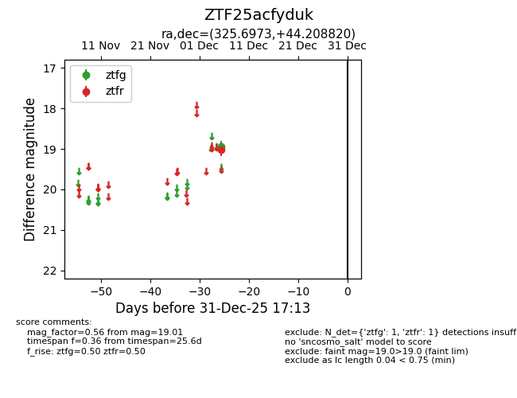
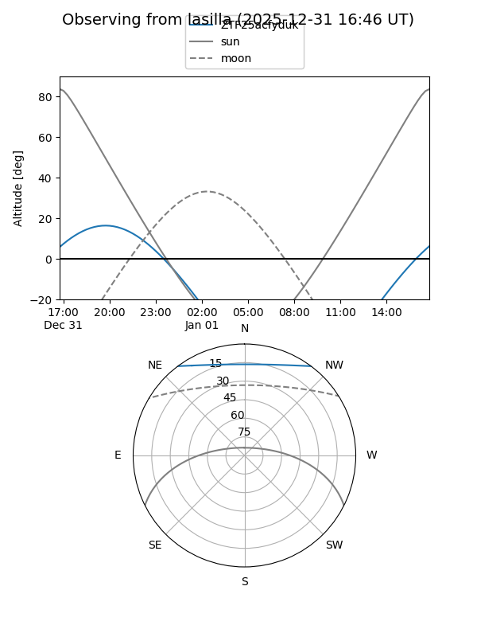

ZTF25acfyduk
Target ZTF25acfyduk at 2025-12-18 11:17
Aliases and brokers:
FINK: fink-portal.org/ZTF25acfyduk
Lasair: lasair-ztf.lsst.ac.uk/objects/ZTF25acfyduk
ALeRCE: alerce.online/object/ZTF25acfyduk
alt names
ZTF25acfyduk (ztf,fink_ztf)
Coordinates:
equatorial (ra, dec) = 325.6973,+44.20882
equatorial (HMS+DMS) = 21:42:47.34,+44:12:31.75
galactic (l, b) = (90.9819,-6.65031)
Photometry
last ztfg=18.95, ztfr=19.01
1 ztfg, 1 ztfr detections
Lightcurve

Visibility


Additional plots